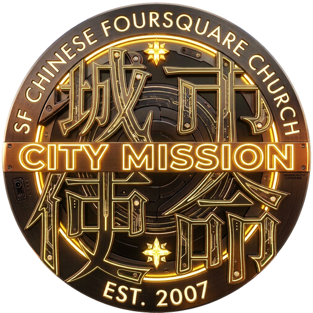

Sunday Worship 主日崇拜
Join us every Sunday at 10:00am for worship in Chinese and English, as one congregation across generations. 歡迎你每主日早上10:00與我們一同敬拜，跨越語言與世代，成為同一個大家庭。

城市使命四方福音會 · SF Chinese Foursquare Church · Est. 2007
A Chinese-speaking church in San Francisco, gathering to worship, grow, and serve this city together. 一間扎根三藩市的華人教會，一同敬拜、成長，並服事這座城市。
We are a Chinese-speaking congregation in San Francisco, established in 2007, committed to being a mission to this city — not just a church in it. We gather to worship, to grow in faith, and to serve our neighbors in tangible, everyday ways. 我們是一所扎根三藩市、於2007年成立的華人教會，委身成為這座城市的使命，而不僅僅是身處其中的一間教會。我們一同敬拜、在信仰中成長，並以實際行動服事身邊的鄰舍。
Join us every Sunday at 10:00am for worship in Chinese and English, as one congregation across generations. 歡迎你每主日早上10:00與我們一同敬拜，跨越語言與世代，成為同一個大家庭。
Weekly small groups where you can build real relationships, study Scripture, and pray together. Ask us which group fits your season of life. 每週的團契小組，讓你建立真實的關係、一同查經與禱告。歡迎聯絡我們，為你找到合適的小組。
Serving our Geneva Avenue neighbors through outreach and mercy ministry — living out our calling as a mission to San Francisco. 透過外展服事與憐憫事工，服事Geneva Avenue一帶的鄰舍，活出我們對三藩市的使命。
There's no single way in — but here's how most people begin. 沒有固定的方式——但這是大部分人開始的方式。
Join us this Sunday at 10:00am. No expectations — just come as you are. 這個主日早上10:00，歡迎你來，不需要任何準備，只要帶著自己來。
Meet our pastoral team and get to know a small group after the service. 崇拜後可以認識牧者同工，並了解適合你的團契小組。
Join a small group, serve on a ministry team, and grow in faith alongside others. 加入團契小組、參與事奉，在信仰中與弟兄姊妹一同成長。
Take what you've received and serve this city — that's the mission continuing. 把所領受的，轉化成服事這城市的行動——這正是使命的延續。
Our weekly worship gathering in Chinese and English. All are welcome, every week. 我們每週的中英雙語崇拜聚會，歡迎所有人隨時加入。
Come worship with us this Sunday, or reach out — we'd love to hear from you. 這個主日歡迎你與我們一同敬拜，或直接聯絡我們——我們很樂意認識你。